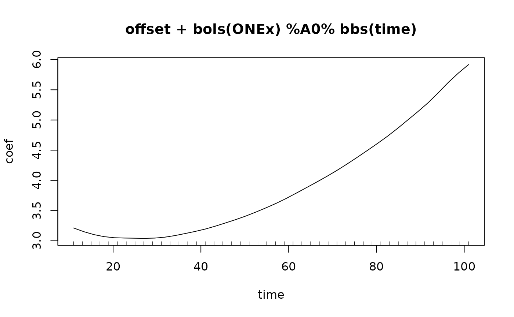
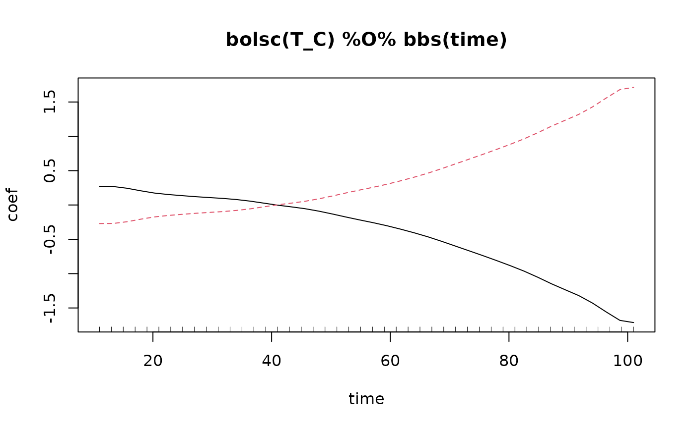
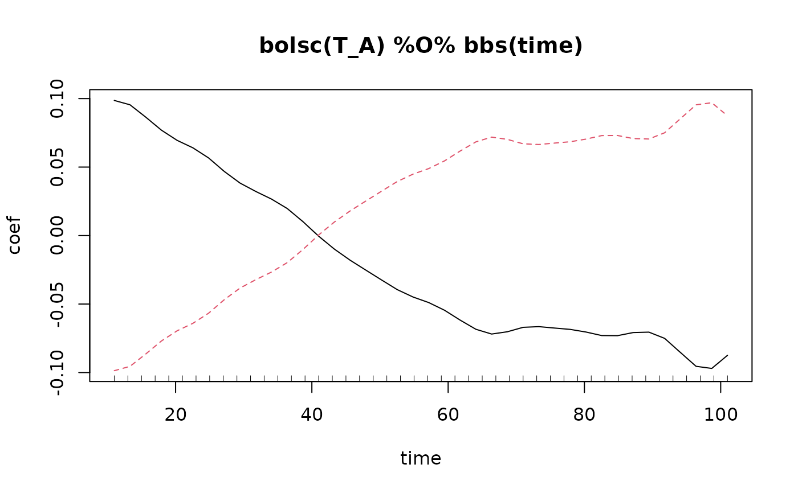
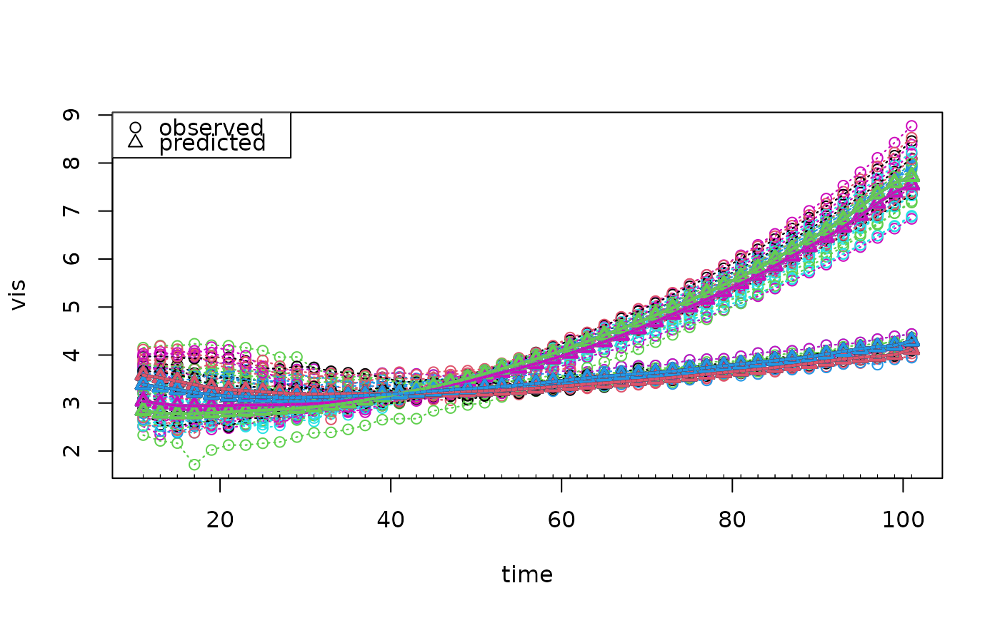

Gradient boosting for optimizing arbitrary loss functions, where component-wise models
are utilized as base-learners in the case of functional responses.
Scalar responses are treated as the special case where each functional response has
only one observation.
This function is a wrapper for mboost's mboost and its
siblings to fit models of the general form
$$\xi(Y_i(t) | X_i = x_i) = \sum_{j} h_j(x_i, t), i = 1, ..., N,$$
with a functional (but not necessarily continuous) response \(Y(t)\),
transformation function \(\xi\), e.g., the expectation, the median or some quantile,
and partial effects \(h_j(x_i, t)\) depending on covariates \(x_i\)
and the current index of the response \(t\). The index of the response can
be for example time.
Possible effects are, e.g., a smooth intercept \(\beta_0(t)\),
a linear functional effect \(\int x_i(s)\beta(s,t)ds\),
potentially with integration limits depending on \(t\),
smooth and linear effects of scalar covariates \(f(z_i,t)\) or \(z_i \beta(t)\).
A hands-on tutorial for the package can be found at <doi:10.18637/jss.v094.i10>.
Usage
FDboost(
formula,
timeformula,
id = NULL,
numInt = "equal",
data,
weights = NULL,
offset = NULL,
offset_control = o_control(),
check0 = FALSE,
...
)Arguments
- formula
a symbolic description of the model to be fit. Per default no intercept is added, only a smooth offset, see argument
offset. To add a smooth intercept, use 1, e.g.,y ~ 1for a pure intercept model.- timeformula
one-sided formula for the specification of the effect over the index of the response. For functional response \(Y_i(t)\) typically use
~ bbs(t)to obtain smooth effects over \(t\). In the limiting case of \(Y_i\) being a scalar response, use~ bols(1), which sets up a base-learner for the scalar 1. Or usetimeformula = NULL, then the scalar response is treated as scalar.- id
defaults to NULL which means that all response trajectories are observed on a common grid allowing to represent the response as a matrix. If the response is given in long format for observation-specific grids,
idcontains the information which observations belong to the same trajectory and must be supplied as a formula,~ nameid, where the variablenameidshould contain integers 1, 2, 3, ..., N.- numInt
integration scheme for the integration of the loss function. One of
c("equal", "Riemann")meaning equal weights of 1 or trapezoidal Riemann weights. Alternatively a vector of lengthncol(response)containing positive weights can be specified.- data
a data frame or list containing the variables in the model.
- weights
only for internal use to specify resampling weights; per default all weights are equal to 1.
- offset
a numeric vector to be used as offset over the index of the response (optional). If no offset is specified, per default
offset = NULLwhich means that a smooth time-specific offset is computed and used before the model fit to center the data. If you do not want to use a time-specific offset, setoffset = "scalar"to get an overall scalar offset, like inmboost.- offset_control
parameters for the estimation of the offset, defaults to
o_control(), seeo_control.- check0
logical, for response in matrix form, i.e. response that is observed on a common grid, check the fitted effects for the sum-to-zero constraint \(h_j(x_i)(t) = 0\) for all \(t\) and give a warning if it is not fulfilled. Defaults to
FALSE.- ...
additional arguments passed to
mboost, including,familyandcontrol.
Value
An object of class FDboost that inherits from mboost.
Special predict.FDboost, coef.FDboost and
plot.FDboost methods are available.
The methods of mboost are available as well,
e.g., extract.
The FDboost-object is a named list containing:
- ...
all elements of an
mboost-object- yname
the name of the response
- ydim
dimension of the response matrix, if the response is represented as such
- yind
the observation (time-)points of the response, i.e. the evaluation points, with its name as attribute
- data
the data that was used for the model fit
- id
the id variable of the response
- predictOffset
the function to predict the smooth offset
- offsetFDboost
offset as specified in call to FDboost
- offsetMboost
offset as given to mboost
- call
the call to
FDboost- callEval
the evaluated function call to
FDboostwithout data- numInt
value of argument
numIntdetermining the numerical integration scheme- timeformula
the time-formula
- formulaFDboost
the formula with which
FDboostwas called- formulaMboost
the formula with which
mboostwas called withinFDboost
Details
In matrix representation of functional response and covariates each row
represents one functional observation, e.g., Y[i,t_g] corresponds to \(Y_i(t_g)\),
giving a <number of curves> by <number of evaluations> matrix.
For the model fit, the matrix of the functional
response evaluations \(Y_i(t_g)\) are stacked internally into one long vector.
If it is possible to represent the model as a generalized linear array model
(Currie et al., 2006), the array structure is used for an efficient implementation,
see mboost. This is only possible if the design
matrix can be written as the Kronecker product of two marginal design
matrices yielding a functional linear array model (FLAM),
see Brockhaus et al. (2015) for details.
The Kronecker product of two marginal bases is implemented in R-package mboost
in the function %O%, see %O%.
When %O% is called with a specification of df in both base-learners,
e.g., bbs(x1, df = df1) %O% bbs(t, df = df2), the global df for the
Kroneckered base-learner is computed as df = df1 * df2.
And thus the penalty has only one smoothness parameter lambda resulting in an isotropic penalty.
A Kronecker product with anisotropic penalty is %A%, allowing for different
amount of smoothness in the two directions, see %A%.
If the formula contains base-learners connected by %O%, %A% or %A0%,
those effects are not expanded with timeformula, allowing for model specifications
with different effects in time-direction.
If the response is observed on curve-specific grids it must be supplied
as a vector in long format and the argument id has
to be specified (as formula!) to define which observations belong to which curve.
In this case the base-learners are built as row tensor-products of marginal base-learners,
see Scheipl et al. (2015) and Brockhaus et al. (2017), for details on how to set up the effects.
The row tensor product of two marginal bases is implemented in R-package mboost
in the function %X%, see %X%.
A scalar response can be seen as special case of a functional response with only
one time-point, and thus it can be represented as FLAM with basis 1 in
time-direction, use timeformula = ~bols(1). In this case, a penalty in the
time-direction is used, see Brockhaus et al. (2015) for details.
Alternatively, the scalar response is fitted as scalar response, like in the function
mboost in package mboost.
The advantage of using FDboost in that case
is that methods for the functional base-learners are available, e.g., plot.
The desired regression type is specified by the family-argument,
see the help-page of mboost. For example a mean regression model is obtained by
family = Gaussian() which is the default or median regression
by family = QuantReg();
see Family for a list of implemented families.
With FDboost the following covariate effects can be estimated by specifying
the following effects in the formula
(similar to function pffr
in R-package refund.
The timeformula is used to expand the effects in t-direction.
Linear functional effect of scalar (numeric or factor) covariate \(z\) that varies smoothly over \(t\), i.e. \(z_i \beta(t)\), specified as
bolsc(z), seebolsc, or for a group effect with mean zero usebrandomc(z).Nonlinear effects of a scalar covariate that vary smoothly over \(t\), i.e. \(f(z_i, t)\), specified as
bbsc(z), seebbsc.(Nonlinear) effects of scalar covariates that are constant over \(t\), e.g., \(f(z_i)\), specified as
c(bbs(z)), or \(\beta z_i\), specified asc(bols(z)).Interaction terms between two scalar covariates, e.g., \(z_i1 zi2 \beta(t)\), are specified as
bols(z1) %Xc% bols(z2)and an interaction \(z_i1 f(zi2, t)\) asbols(z1) %Xc% bbs(z2), as%Xc%applies the sum-to-zero constraint to the desgin matrix of the tensor product built by%Xc%, see%Xc%.Function-on-function regression terms of functional covariates
x, e.g., \(\int x_i(s)\beta(s,t)ds\), specified asbsignal(x, s = s), using P-splines, seebsignal. Terms given bybfpcprovide FPC-based effects of functional covariates, seebfpc.Function-on-function regression terms of functional covariates
xwith integration limits \([l(t), u(t)]\) depending on \(t\), e.g., \(\int_[l(t), u(t)] x_i(s)\beta(s,t)ds\), specified asbhist(x, s = s, time = t, limits). Thelimitsargument defaults to"s<=t"which yields a historical effect with limits \([min(t),t]\), seebhist.Concurrent effects of functional covariates
xmeasured on the same grid as the response, i.e., \(x_i(s)\beta(t)\), are specified asbconcurrent(x, s = s, time = t), seebconcurrent.Interaction effects can be estimated as tensor product smooth, e.g., \( z \int x_i(s)\beta(s,t)ds\) as
bsignal(x, s = s) %X% bolsc(z)For interaction effects with historical functional effects, e.g., \( z_i \int_[l(t),u(t)] x_i(s)\beta(s,t)ds\) the base-learner
bhistxshould be used instead ofbhist, e.g.,bhistx(x, limits) %X% bolsc(z), seebhistx.Generally, the
c()-notation can be used to get effects that are constant over the index of the functional response.If the
formulainFDboostcontains base-learners connected by%O%,%A%or%A0%, those effects are not expanded withtimeformula, allowing for model specifications with different effects in time-direction.
In order to obtain a fair selection of base-learners, the same degrees of freedom (df)
should be specified for all baselearners. If the number of df differs among the base-learners,
the selection is biased towards more flexible base-learners with higher df as they are more
likely to yield larger improvements of the fit. It is recommended to use
a rather small number of df for all base-learners.
It is not possible to specify df larger than the rank of the design matrix.
For base-learners with rank-deficient penalty, it is not possible to specify df smaller than the
rank of the null space of the penalty (e.g., in bbs unpenalized part of P-splines).
The df of the base-learners in an FDboost-object can be checked using extract(object, "df"),
see extract.
The most important tuning parameter of component-wise gradient boosting
is the number of boosting iterations. It is recommended to use the number of
boosting iterations as only tuning parameter,
fixing the step-length at a small value (e.g., nu = 0.1).
Note that the default number of boosting iterations is 100 which is arbitrary and in most
cases not adequate (the optimal number of boosting iterations can considerably exceed 100).
The optimal stopping iteration can be determined by resampling methods like
cross-validation or bootstrapping, see the function cvrisk.FDboost which searches
the optimal stopping iteration on a grid, which in many cases has to be extended.
References
Brockhaus, S., Ruegamer, D. and Greven, S. (2017): Boosting Functional Regression Models with FDboost. <doi:10.18637/jss.v094.i10>
Brockhaus, S., Scheipl, F., Hothorn, T. and Greven, S. (2015): The functional linear array model. Statistical Modelling, 15(3), 279-300.
Brockhaus, S., Melcher, M., Leisch, F. and Greven, S. (2017): Boosting flexible functional regression models with a high number of functional historical effects, Statistics and Computing, 27(4), 913-926.
Currie, I.D., Durban, M. and Eilers P.H.C. (2006): Generalized linear array models with applications to multidimensional smoothing. Journal of the Royal Statistical Society, Series B-Statistical Methodology, 68(2), 259-280.
Scheipl, F., Staicu, A.-M. and Greven, S. (2015): Functional additive mixed models, Journal of Computational and Graphical Statistics, 24(2), 477-501.
Examples
######## Example for function-on-scalar-regression
data("viscosity", package = "FDboost")
## set time-interval that should be modeled
interval <- "101"
## model time until "interval" and take log() of viscosity
end <- which(viscosity$timeAll == as.numeric(interval))
viscosity$vis <- log(viscosity$visAll[,1:end])
viscosity$time <- viscosity$timeAll[1:end]
# with(viscosity, funplot(time, vis, pch = 16, cex = 0.2))
## fit median regression model with 100 boosting iterations,
## step-length 0.4 and smooth time-specific offset
## the factors are coded such that the effects are zero for each timepoint t
## no integration weights are used!
mod1 <- FDboost(vis ~ 1 + bolsc(T_C, df = 2) + bolsc(T_A, df = 2),
timeformula = ~ bbs(time, df = 4),
numInt = "equal", family = QuantReg(),
offset = NULL, offset_control = o_control(k_min = 9),
data = viscosity, control=boost_control(mstop = 100, nu = 0.4))
#> Use a smooth offset.
# \donttest{
#### find optimal mstop over 5-fold bootstrap, small number of folds for example
#### do the resampling on the level of curves
## possibility 1: smooth offset and transformation matrices are refitted
set.seed(123)
appl1 <- applyFolds(mod1, folds = cv(rep(1, length(unique(mod1$id))), B = 5),
grid = 1:500)
## plot(appl1)
mstop(appl1)
#> 1] 371
mod1[mstop(appl1)]
#>
#> Model-based Boosting with Functional Response
#>
#> Call:
#> FDboost(formula = vis ~ 1 + bolsc(T_C, df = 2) + bolsc(T_A, df = 2), timeformula = ~bbs(time, df = 4), numInt = "equal", data = viscosity, offset = NULL, offset_control = o_control(k_min = 9), family = QuantReg(), control = boost_control(mstop = 100, nu = 0.4))
#>
#> 10
#> Quantile Regression
#>
#> Loss function: tau * (y - f) * ((y - f) >= 0) - (1 - tau) * (y - f) * ((y -
#> f) < 0)
#>
#>
#> Number of boosting iterations: mstop = 371
#> Step size: 0.4
#> Offset: 3.303 3.264 3.227 ... 5.371 5.502 5.649
#> Number of baselearners: 3
#>
## possibility 2: smooth offset is refitted,
## computes oob-risk and the estimated coefficients on the folds
set.seed(123)
val1 <- validateFDboost(mod1, folds = cv(rep(1, length(unique(mod1$id))), B = 5),
grid = 1:500)
#> Warning: 'validateFDboost' is deprecated. Use 'applyFolds' and 'bootstrapCI' instead.
#> For bolsc, the transformation matrix Z is fixed over all folds.
#> Fold with high values in oobrisk (median is 0.1):
#> In fold 4: 0.11
## plot(val1)
mstop(val1)
#> [1] 493
#> attr(,"risk")
#> [1] "minimize mean risk"
mod1[mstop(val1)]
#>
#> Model-based Boosting with Functional Response
#>
#> Call:
#> FDboost(formula = vis ~ 1 + bolsc(T_C, df = 2) + bolsc(T_A, df = 2), timeformula = ~bbs(time, df = 4), numInt = "equal", data = viscosity, offset = NULL, offset_control = o_control(k_min = 9), family = QuantReg(), control = boost_control(mstop = 100, nu = 0.4))
#>
#> 10
#> Quantile Regression
#>
#> Loss function: tau * (y - f) * ((y - f) >= 0) - (1 - tau) * (y - f) * ((y -
#> f) < 0)
#>
#>
#> Number of boosting iterations: mstop = 493
#> Step size: 0.4
#> Offset: 3.303 3.264 3.227 ... 5.371 5.502 5.649
#> Number of baselearners: 3
#>
## possibility 3: very efficient
## using the function cvrisk; be careful to do the resampling on the level of curves
folds1 <- cvLong(id = mod1$id, weights = model.weights(mod1), B = 5)
cvm1 <- cvrisk(mod1, folds = folds1, grid = 1:500)
#> The smooth offset is fixed over all folds.
#> For bolsc, the transformation matrix Z is fixed over all folds.
## plot(cvm1)
mstop(cvm1)
#> [1] 43
## look at the model
summary(mod1)
#> $object
#>
#> Model-based Boosting with Functional Response
#>
#> Call:
#> FDboost(formula = vis ~ 1 + bolsc(T_C, df = 2) + bolsc(T_A, df = 2), timeformula = ~bbs(time, df = 4), numInt = "equal", data = viscosity, offset = NULL, offset_control = o_control(k_min = 9), family = QuantReg(), control = boost_control(mstop = 100, nu = 0.4))
#>
#> 10
#> Quantile Regression
#>
#> Loss function: tau * (y - f) * ((y - f) >= 0) - (1 - tau) * (y - f) * ((y -
#> f) < 0)
#>
#>
#> Number of boosting iterations: mstop = 493
#> Step size: 0.4
#> Offset: 3.303 3.264 3.227 ... 5.371 5.502 5.649
#> Number of baselearners: 3
#>
#>
#> $selprob
#> "bols(ONEx, intercept = FALSE, df = 1) %A0% bbs(time, df = 8)"
#> 0.83975659
#> "bolsc(T_C, df = 2) %O% bbs(time, df = 4)"
#> 0.11967546
#> "bolsc(T_A, df = 2) %O% bbs(time, df = 4)"
#> 0.04056795
#>
#> attr(,"class")
#> [1] "summary.FDboost"
coef(mod1)
#> $offset
#> $offset$x
#> [1] 11.00000 13.30769 15.61538 17.92308 20.23077 22.53846 24.84615
#> [8] 27.15385 29.46154 31.76923 34.07692 36.38462 38.69231 41.00000
#> [15] 43.30769 45.61538 47.92308 50.23077 52.53846 54.84615 57.15385
#> [22] 59.46154 61.76923 64.07692 66.38462 68.69231 71.00000 73.30769
#> [29] 75.61538 77.92308 80.23077 82.53846 84.84615 87.15385 89.46154
#> [36] 91.76923 94.07692 96.38462 98.69231 101.00000
#>
#> $offset$xlab
#> [1] "time"
#>
#> $offset$xlim
#> [1] 11 101
#>
#> $offset$value
#> [1] 3.303152 3.258569 3.216019 3.176887 3.142556 3.114407 3.093826 3.082152
#> [9] 3.079885 3.086735 3.102382 3.126505 3.158785 3.198901 3.246321 3.299697
#> [17] 3.357485 3.418140 3.480117 3.541873 3.601946 3.660799 3.720821 3.784484
#> [25] 3.854258 3.932616 4.022029 4.124079 4.236645 4.356644 4.480996 4.606616
#> [33] 4.730423 4.849477 4.964534 5.080312 5.201720 5.333667 5.481065 5.648821
#>
#> $offset$dim
#> [1] 1
#>
#> $offset$main
#> [1] "offset"
#>
#>
#> $smterms
#> $smterms$`bols(ONEx) %A0% bbs(time)`
#> $smterms$`bols(ONEx) %A0% bbs(time)`$x
#> [1] 11.00000 13.30769 15.61538 17.92308 20.23077 22.53846 24.84615
#> [8] 27.15385 29.46154 31.76923 34.07692 36.38462 38.69231 41.00000
#> [15] 43.30769 45.61538 47.92308 50.23077 52.53846 54.84615 57.15385
#> [22] 59.46154 61.76923 64.07692 66.38462 68.69231 71.00000 73.30769
#> [29] 75.61538 77.92308 80.23077 82.53846 84.84615 87.15385 89.46154
#> [36] 91.76923 94.07692 96.38462 98.69231 101.00000
#>
#> $smterms$`bols(ONEx) %A0% bbs(time)`$xlab
#> [1] "time"
#>
#> $smterms$`bols(ONEx) %A0% bbs(time)`$xlim
#> [1] 11 101
#>
#> $smterms$`bols(ONEx) %A0% bbs(time)`$value
#> [1] -0.091269201 -0.107747653 -0.113862976 -0.108480620 -0.092139022
#> [6] -0.069490057 -0.051719591 -0.042504027 -0.035798364 -0.027668235
#> [11] -0.016928889 -0.007474560 -0.004641457 -0.005144255 -0.004232177
#> [16] -0.004473353 -0.007690091 -0.008968325 -0.004866454 0.003606548
#> [21] 0.017466876 0.040323076 0.069184389 0.095947591 0.117363382
#> [26] 0.133055374 0.142811075 0.146566986 0.144657008 0.138164228
#> [31] 0.129901140 0.124988054 0.131879910 0.151324898 0.174981175
#> [36] 0.204624967 0.248293059 0.288595385 0.297266467 0.268763399
#>
#> $smterms$`bols(ONEx) %A0% bbs(time)`$dim
#> [1] 1
#>
#> $smterms$`bols(ONEx) %A0% bbs(time)`$main
#> [1] "bols(ONEx) %A0% bbs(time)"
#>
#>
#> $smterms$`bolsc(T_C) %O% bbs(time)`
#> $smterms$`bolsc(T_C) %O% bbs(time)`$x
#> [1] low high
#> Levels: low high
#>
#> $smterms$`bolsc(T_C) %O% bbs(time)`$y
#> [1] 11.00000 13.30769 15.61538 17.92308 20.23077 22.53846 24.84615
#> [8] 27.15385 29.46154 31.76923 34.07692 36.38462 38.69231 41.00000
#> [15] 43.30769 45.61538 47.92308 50.23077 52.53846 54.84615 57.15385
#> [22] 59.46154 61.76923 64.07692 66.38462 68.69231 71.00000 73.30769
#> [29] 75.61538 77.92308 80.23077 82.53846 84.84615 87.15385 89.46154
#> [36] 91.76923 94.07692 96.38462 98.69231 101.00000
#>
#> $smterms$`bolsc(T_C) %O% bbs(time)`$xlab
#> [1] "T_C"
#>
#> $smterms$`bolsc(T_C) %O% bbs(time)`$ylab
#> [1] "time"
#>
#> $smterms$`bolsc(T_C) %O% bbs(time)`$ylim
#> [1] 11 101
#>
#> $smterms$`bolsc(T_C) %O% bbs(time)`$xlim
#> [1] NA NA
#>
#> $smterms$`bolsc(T_C) %O% bbs(time)`$z
#> NULL
#>
#> $smterms$`bolsc(T_C) %O% bbs(time)`$zlab
#> [1] NA
#>
#> $smterms$`bolsc(T_C) %O% bbs(time)`$vecStand
#> NULL
#>
#> $smterms$`bolsc(T_C) %O% bbs(time)`$value
#> [,1] [,2] [,3] [,4] [,5] [,6]
#> [1,] 0.2705095 0.2690993 0.2440873 0.207177 0.1741204 0.1528573
#> [2,] -0.2705095 -0.2690993 -0.2440873 -0.207177 -0.1741204 -0.1528573
#> [,7] [,8] [,9] [,10] [,11] [,12]
#> [1,] 0.1365169 0.1212306 0.1083641 0.09596454 0.07932187 0.05625178
#> [2,] -0.1365169 -0.1212306 -0.1083641 -0.09596454 -0.07932187 -0.05625178
#> [,13] [,14] [,15] [,16] [,17] [,18]
#> [1,] 0.02698256 -0.002518819 -0.02712489 -0.0537773 -0.08910448 -0.1309835
#> [2,] -0.02698256 0.002518819 0.02712489 0.0537773 0.08910448 0.1309835
#> [,19] [,20] [,21] [,22] [,23] [,24]
#> [1,] -0.1754458 -0.2179128 -0.2585254 -0.3029448 -0.3528086 -0.4064287
#> [2,] 0.1754458 0.2179128 0.2585254 0.3029448 0.3528086 0.4064287
#> [,25] [,26] [,27] [,28] [,29] [,30]
#> [1,] -0.4649412 -0.5303169 -0.5994229 -0.6683626 -0.7379886 -0.8098512
#> [2,] 0.4649412 0.5303169 0.5994229 0.6683626 0.7379886 0.8098512
#> [,31] [,32] [,33] [,34] [,35] [,36] [,37]
#> [1,] -0.8842354 -0.9632662 -1.05238 -1.147553 -1.234273 -1.32011 -1.428823
#> [2,] 0.8842354 0.9632662 1.05238 1.147553 1.234273 1.32011 1.428823
#> [,38] [,39] [,40]
#> [1,] -1.557983 -1.680707 -1.712746
#> [2,] 1.557983 1.680707 1.712746
#>
#> $smterms$`bolsc(T_C) %O% bbs(time)`$dim
#> [1] 2
#>
#> $smterms$`bolsc(T_C) %O% bbs(time)`$main
#> [1] "bolsc(T_C) %O% bbs(time)"
#>
#>
#> $smterms$`bolsc(T_A) %O% bbs(time)`
#> $smterms$`bolsc(T_A) %O% bbs(time)`$x
#> [1] low high
#> Levels: low high
#>
#> $smterms$`bolsc(T_A) %O% bbs(time)`$y
#> [1] 11.00000 13.30769 15.61538 17.92308 20.23077 22.53846 24.84615
#> [8] 27.15385 29.46154 31.76923 34.07692 36.38462 38.69231 41.00000
#> [15] 43.30769 45.61538 47.92308 50.23077 52.53846 54.84615 57.15385
#> [22] 59.46154 61.76923 64.07692 66.38462 68.69231 71.00000 73.30769
#> [29] 75.61538 77.92308 80.23077 82.53846 84.84615 87.15385 89.46154
#> [36] 91.76923 94.07692 96.38462 98.69231 101.00000
#>
#> $smterms$`bolsc(T_A) %O% bbs(time)`$xlab
#> [1] "T_A"
#>
#> $smterms$`bolsc(T_A) %O% bbs(time)`$ylab
#> [1] "time"
#>
#> $smterms$`bolsc(T_A) %O% bbs(time)`$ylim
#> [1] 11 101
#>
#> $smterms$`bolsc(T_A) %O% bbs(time)`$xlim
#> [1] NA NA
#>
#> $smterms$`bolsc(T_A) %O% bbs(time)`$z
#> NULL
#>
#> $smterms$`bolsc(T_A) %O% bbs(time)`$zlab
#> [1] NA
#>
#> $smterms$`bolsc(T_A) %O% bbs(time)`$vecStand
#> NULL
#>
#> $smterms$`bolsc(T_A) %O% bbs(time)`$value
#> [,1] [,2] [,3] [,4] [,5] [,6]
#> [1,] 0.09865272 0.09547757 0.08647878 0.0769434 0.06949822 0.06406513
#> [2,] -0.09865272 -0.09547757 -0.08647878 -0.0769434 -0.06949822 -0.06406513
#> [,7] [,8] [,9] [,10] [,11] [,12]
#> [1,] 0.05666913 0.04678076 0.03832014 0.03220546 0.0266364 0.0197478
#> [2,] -0.05666913 -0.04678076 -0.03832014 -0.03220546 -0.0266364 -0.0197478
#> [,13] [,14] [,15] [,16] [,17] [,18]
#> [1,] 0.01017089 -0.0004612272 -0.009897456 -0.01798867 -0.02522936 -0.0324123
#> [2,] -0.01017089 0.0004612272 0.009897456 0.01798867 0.02522936 0.0324123
#> [,19] [,20] [,21] [,22] [,23] [,24]
#> [1,] -0.03947891 -0.04484741 -0.04891626 -0.05449744 -0.06173898 -0.06841605
#> [2,] 0.03947891 0.04484741 0.04891626 0.05449744 0.06173898 0.06841605
#> [,25] [,26] [,27] [,28] [,29] [,30]
#> [1,] -0.07189064 -0.07022386 -0.06698879 -0.06648485 -0.0675173 -0.06850186
#> [2,] 0.07189064 0.07022386 0.06698879 0.06648485 0.0675173 0.06850186
#> [,31] [,32] [,33] [,34] [,35] [,36]
#> [1,] -0.07042105 -0.07299409 -0.07308409 -0.07081355 -0.0704974 -0.07503854
#> [2,] 0.07042105 0.07299409 0.07308409 0.07081355 0.0704974 0.07503854
#> [,37] [,38] [,39] [,40]
#> [1,] -0.08528506 -0.09544973 -0.09699098 -0.08742189
#> [2,] 0.08528506 0.09544973 0.09699098 0.08742189
#>
#> $smterms$`bolsc(T_A) %O% bbs(time)`$dim
#> [1] 2
#>
#> $smterms$`bolsc(T_A) %O% bbs(time)`$main
#> [1] "bolsc(T_A) %O% bbs(time)"
#>
#>
#>
plot(mod1)



plotPredicted(mod1, lwdPred = 2)

# }
######## Example for scalar-on-function-regression
data("fuelSubset", package = "FDboost")
## center the functional covariates per observed wavelength
fuelSubset$UVVIS <- scale(fuelSubset$UVVIS, scale = FALSE)
fuelSubset$NIR <- scale(fuelSubset$NIR, scale = FALSE)
## to make mboost:::df2lambda() happy (all design matrix entries < 10)
## reduce range of argvals to [0,1] to get smaller integration weights
fuelSubset$uvvis.lambda <- with(fuelSubset, (uvvis.lambda - min(uvvis.lambda)) /
(max(uvvis.lambda) - min(uvvis.lambda) ))
fuelSubset$nir.lambda <- with(fuelSubset, (nir.lambda - min(nir.lambda)) /
(max(nir.lambda) - min(nir.lambda) ))
## model fit with scalar response
## include no intercept as all base-learners are centered around 0
mod2 <- FDboost(heatan ~ bsignal(UVVIS, uvvis.lambda, knots = 40, df = 4, check.ident = FALSE)
+ bsignal(NIR, nir.lambda, knots = 40, df = 4, check.ident = FALSE),
timeformula = NULL, data = fuelSubset, control = boost_control(mstop = 200))
## additionally include a non-linear effect of the scalar variable h2o
mod2s <- FDboost(heatan ~ bsignal(UVVIS, uvvis.lambda, knots = 40, df = 4, check.ident = FALSE)
+ bsignal(NIR, nir.lambda, knots = 40, df = 4, check.ident = FALSE)
+ bbs(h2o, df = 4),
timeformula = NULL, data = fuelSubset, control = boost_control(mstop = 200))
## alternative model fit as FLAM model with scalar response; as timeformula = ~ bols(1)
## adds a penalty over the index of the response, i.e., here a ridge penalty
## thus, mod2f and mod2 have different penalties
mod2f <- FDboost(heatan ~ bsignal(UVVIS, uvvis.lambda, knots = 40, df = 4, check.ident = FALSE)
+ bsignal(NIR, nir.lambda, knots = 40, df = 4, check.ident = FALSE),
timeformula = ~ bols(1), data = fuelSubset, control = boost_control(mstop = 200))
# \donttest{
## bootstrap to find optimal mstop takes some time
set.seed(123)
folds2 <- cv(weights = model.weights(mod2), B = 10)
cvm2 <- cvrisk(mod2, folds = folds2, grid = 1:1000)
mstop(cvm2) ## mod2[327]
#> [1] 363
summary(mod2)
#> $object
#>
#> Model-based Boosting with Scalar Response
#>
#> Call:
#> FDboost(formula = heatan ~ bsignal(UVVIS, uvvis.lambda, knots = 40, df = 4, check.ident = FALSE) + bsignal(NIR, nir.lambda, knots = 40, df = 4, check.ident = FALSE), timeformula = NULL, data = fuelSubset, control = boost_control(mstop = 200))
#>
#> 10
#> Squared Error (Regression)
#>
#> Loss function: (y - f)^2
#>
#>
#> Number of boosting iterations: mstop = 200
#> Step size: 0.1
#> Offset: 24.766
#> Number of baselearners: 2
#>
#>
#> $selprob
#> bsignal(x = NIR, s = nir.lambda, knots = 40, df = 4, check.ident = FALSE)
#> 0.74
#> bsignal(x = UVVIS, s = uvvis.lambda, knots = 40, df = 4, check.ident = FALSE)
#> 0.26
#>
#> attr(,"class")
#> [1] "summary.FDboost"
## plot(mod2)
# }
## Example for function-on-function-regression
if(require(fda)){
data("CanadianWeather", package = "fda")
CanadianWeather$l10precip <- t(log(CanadianWeather$monthlyPrecip))
CanadianWeather$temp <- t(CanadianWeather$monthlyTemp)
CanadianWeather$region <- factor(CanadianWeather$region)
CanadianWeather$month.s <- CanadianWeather$month.t <- 1:12
## center the temperature curves per time-point
CanadianWeather$temp <- scale(CanadianWeather$temp, scale = FALSE)
rownames(CanadianWeather$temp) <- NULL ## delete row-names
## fit model with cyclic splines over the year
mod3 <- FDboost(l10precip ~ bols(region, df = 2.5, contrasts.arg = "contr.dummy")
+ bsignal(temp, month.s, knots = 11, cyclic = TRUE,
df = 2.5, boundary.knots = c(0.5,12.5), check.ident = FALSE),
timeformula = ~ bbs(month.t, knots = 11, cyclic = TRUE,
df = 3, boundary.knots = c(0.5, 12.5)),
offset = "scalar", offset_control = o_control(k_min = 5),
control = boost_control(mstop = 60),
data = CanadianWeather)
# \donttest{
#### find the optimal mstop over 5-fold bootstrap
## using the function applyFolds
set.seed(123)
folds3 <- cv(rep(1, length(unique(mod3$id))), B = 5)
appl3 <- applyFolds(mod3, folds = folds3, grid = 1:200)
## use function cvrisk; be careful to do the resampling on the level of curves
set.seed(123)
folds3long <- cvLong(id = mod3$id, weights = model.weights(mod3), B = 5)
cvm3 <- cvrisk(mod3, folds = folds3long, grid = 1:200)
mstop(cvm3) ## mod3[64]
summary(mod3)
## plot(mod3, pers = TRUE)
# }
}
#> Loading required package: fda
#> Loading required package: splines
#> Loading required package: fds
#> Loading required package: rainbow
#> Loading required package: MASS
#> Loading required package: pcaPP
#> Loading required package: RCurl
#> Loading required package: deSolve
#>
#> Attaching package: ‘fda’
#> The following object is masked from ‘package:graphics’:
#>
#> matplot
#> The following object is masked from ‘package:datasets’:
#>
#> gait
#> Warning: 1 fold(s) encountered an error. Results are based on 4 folds only.
#> Original error message(s):
#> Error in fitfct(weights = weights, oobweights = oobweights) :
#> The factor variable 'region' has unobserved levels in the training data. Make sure that training data in each fold contains all factor levels.
#> $object
#>
#> Model-based Boosting with Functional Response
#>
#> Call:
#> FDboost(formula = l10precip ~ bols(region, df = 2.5, contrasts.arg = "contr.dummy") + bsignal(temp, month.s, knots = 11, cyclic = TRUE, df = 2.5, boundary.knots = c(0.5, 12.5), check.ident = FALSE), timeformula = ~bbs(month.t, knots = 11, cyclic = TRUE, df = 3, boundary.knots = c(0.5, 12.5)), data = CanadianWeather, offset = "scalar", offset_control = o_control(k_min = 5), control = boost_control(mstop = 60))
#>
#> 10
#> Squared Error (Regression)
#>
#> Loss function: (y - f)^2
#>
#>
#> Number of boosting iterations: mstop = 60
#> Step size: 0.1
#> Offset: 0.494
#> Number of baselearners: 2
#>
#>
#> $selprob
#> "bols(region, df = 2.5, contrasts.arg = \\"contr.dummy\\") %O% bbs(month.t, knots = 11, boundary.knots = c(0.5, 12.5), df = 3, cyclic = TRUE)"
#> 0.6833333
#> "bsignal(x = temp, s = month.s, knots = 11, boundary.knots = c(0.5, 12.5), df = 2.5, cyclic = TRUE, check.ident = FALSE) %O% bbs(month.t, knots = 11, boundary.knots = c(0.5, 12.5), df = 3, cyclic = TRUE)"
#> 0.3166667
#>
#> attr(,"class")
#> [1] "summary.FDboost"
######## Example for functional response observed on irregular grid
######## Delete part of observations in viscosity data-set
data("viscosity", package = "FDboost")
## set time-interval that should be modeled
interval <- "101"
## model time until "interval" and take log() of viscosity
end <- which(viscosity$timeAll == as.numeric(interval))
viscosity$vis <- log(viscosity$visAll[,1:end])
viscosity$time <- viscosity$timeAll[1:end]
# with(viscosity, funplot(time, vis, pch = 16, cex = 0.2))
## only keep one eighth of the observation points
set.seed(123)
selectObs <- sort(sample(x = 1:(64*46), size = 64*46/4, replace = FALSE))
dataIrregular <- with(viscosity, list(vis = c(vis)[selectObs],
T_A = T_A, T_C = T_C,
time = rep(time, each = 64)[selectObs],
id = rep(1:64, 46)[selectObs]))
## fit median regression model with 50 boosting iterations,
## step-length 0.4 and smooth time-specific offset
## the factors are in effect coding -1, 1 for the levels
## no integration weights are used!
mod4 <- FDboost(vis ~ 1 + bols(T_C, contrasts.arg = "contr.sum", intercept = FALSE)
+ bols(T_A, contrasts.arg = "contr.sum", intercept=FALSE),
timeformula = ~ bbs(time, lambda = 100), id = ~id,
numInt = "Riemann", family = QuantReg(),
offset = NULL, offset_control = o_control(k_min = 9),
data = dataIrregular, control = boost_control(mstop = 50, nu = 0.4))
#> Use a smooth offset for irregular data.
## summary(mod4)
## plot(mod4)
## plotPredicted(mod4, lwdPred = 2)
# \donttest{
## Find optimal mstop, small grid/low B for a fast example
set.seed(123)
folds4 <- cv(rep(1, length(unique(mod4$id))), B = 3)
appl4 <- applyFolds(mod4, folds = folds4, grid = 1:50)
## val4 <- validateFDboost(mod4, folds = folds4, grid = 1:50)
set.seed(123)
folds4long <- cvLong(id = mod4$id, weights = model.weights(mod4), B = 3)
cvm4 <- cvrisk(mod4, folds = folds4long, grid = 1:50)
#> The smooth offset is fixed over all folds.
mstop(cvm4)
#> [1] 14
# }
## Be careful if you want to predict newdata with irregular response,
## as the argument index is not considered in the prediction of newdata.
## Thus, all covariates have to be repeated according to the number of observations
## in each response trajectroy.
## Predict four response curves with full time-observations
## for the four combinations of T_A and T_C.
newd <- list(T_A = factor(c(1,1,2,2), levels = 1:2,
labels = c("low", "high"))[rep(1:4, length(viscosity$time))],
T_C = factor(c(1,2,1,2), levels = 1:2,
labels = c("low", "high"))[rep(1:4, length(viscosity$time))],
time = rep(viscosity$time, 4))
pred <- predict(mod4, newdata = newd)
## funplot(x = rep(viscosity$time, 4), y = pred, id = rep(1:4, length(viscosity$time)))